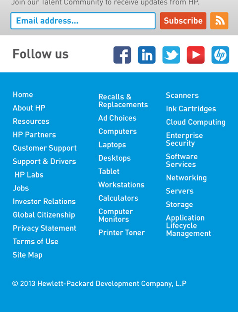
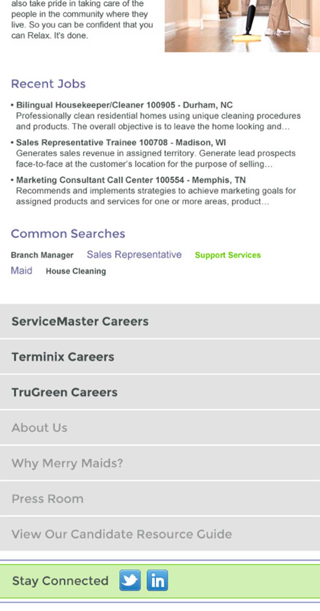
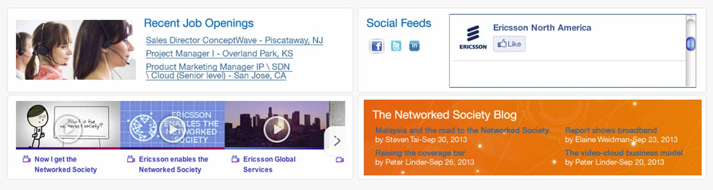
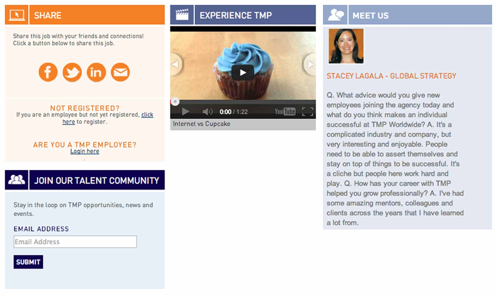
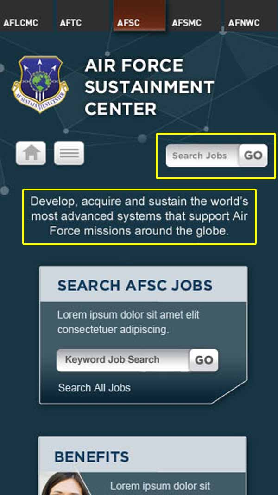

Take Note
Some of the common flags that the development team raised in reviewing last session's homework:
Problem: Tiny footer links
Potenial solutions:
- Increase font size of link text
- Add more padding/spacing between links
- Make links larger and move into an expandable/collapsible section, to avoid visual clutter
Problem: Content order

Potential solution: Reorder content
- Consistent cross-device content hierarchy
- More focus on jobs, less focus on social
- There may be some cases where content order needs to change based on screen size, to meet different user needs. In general, designs should maintain consistency. If you encounter an exception/special case, discuss possible solutions with your friendly neighborhood developer.
Problem: Tight grids
If the user resizes text within the browser, a horizontally-aligned grid layout can fall apart.
Before text resize:
After text resize:

Potential solutions:
- Having unevenly-sized content modules is absolutely acceptable in your design - the mockup should not set the expectation of a perfectly aligned grid
- Allow content modules to have variable heights (see job descriptions on jobsattmp.com) 
- Avoid precisely-sized container layouts for text content
Problem: The Lone Hamburger
The small screen version has a menu button, but there is no corresponding main menu on either the small or large screen layout.
Potential solution: Know thy content
Not every mobile site needs to have a main menu or a mobile nav setup. If your site content structure is simple enough that users do not need any kind of global navigation, then do not include one in the site design.
Problem: Content parity
Different screen sizes display different branding messages:


Potential solution: One content, many devices
- Content that is considered "good" for small screens is "good" for large screens (and vice versa)
- Keep branding messages and features consistent across all screen sizes
- Do not treat users of any device (mobile or desktop, small screen or large) as "second-class citizens of the web"


{kind=link}
{kind=link}
{kind=link}
{kind=link}
{kind=link}